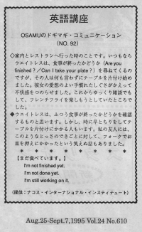

まだ食べています。
When Osamu and his wife went to restaurants, the waitress would usually say "Are you finished?" But at one restaurant, she didn't ask that and just started to clean the table. They felt strange because she was smiling and cleaning without saying anything. They wanted to enjoy eating their french fries but she was cleaning the table before they left.
家内とレストランへ行った時のことです。いつもならウエイトレスは、食事が終わったかどうかを尋ねてくるのですが、その人は何も言わずにテーブルを片付け始めました。彼女の愛想のよい手慣れた仕草が、かえって不快感をつのらせました。これからゆっくり雑談でもして、フレンチフライを楽しもうとしていたところでした。
ウエイトレスは、ふつう食事が終わったかどうかを確認するものと思います。（Are you finished?／Can I take your plate?） しかし、時に早とちりしてテーブルを片付けにかかる人もいます。私の友人には、このようなとっさの出来事に対して、フォークでお皿を押さえにかかったという笑えぬ話もありました。
まだ食べています。
I’m not finished yet.
I’m not done yet.
I’m still wroking on it.

| © 1995-2013 NACOS International Institute. All Rights Reserved. |